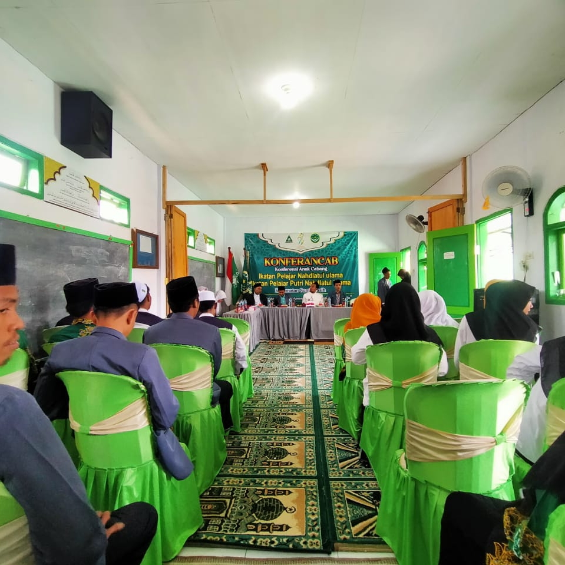
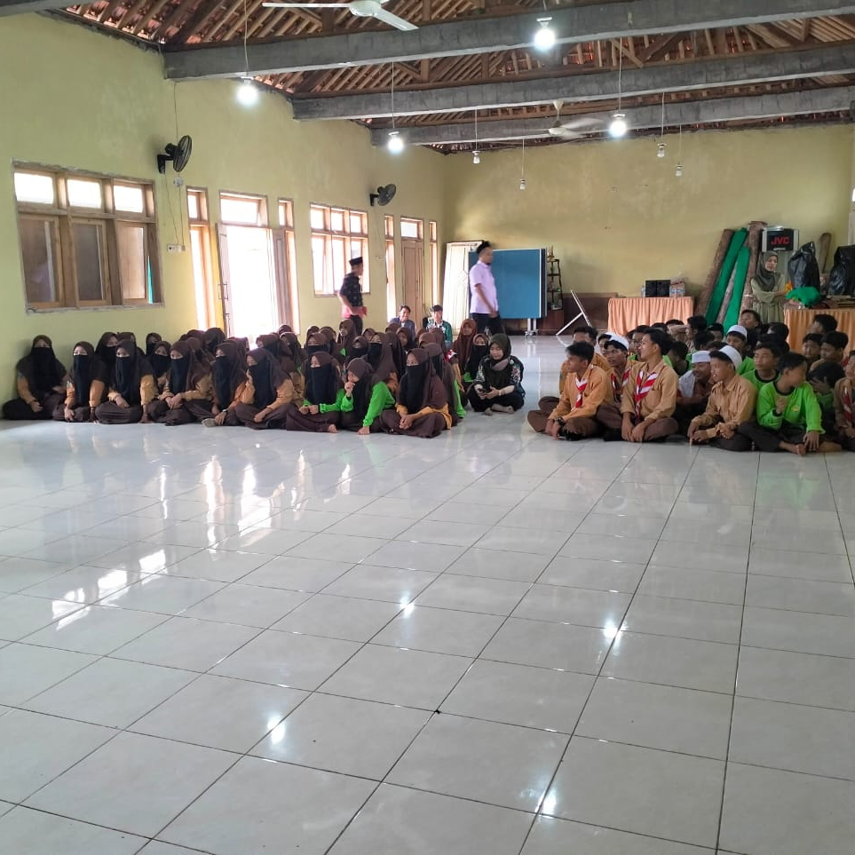
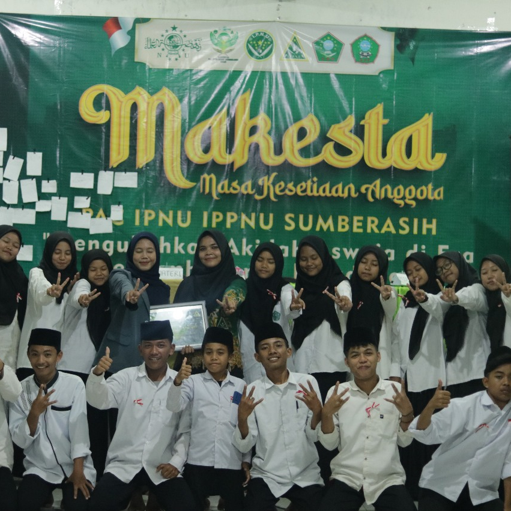
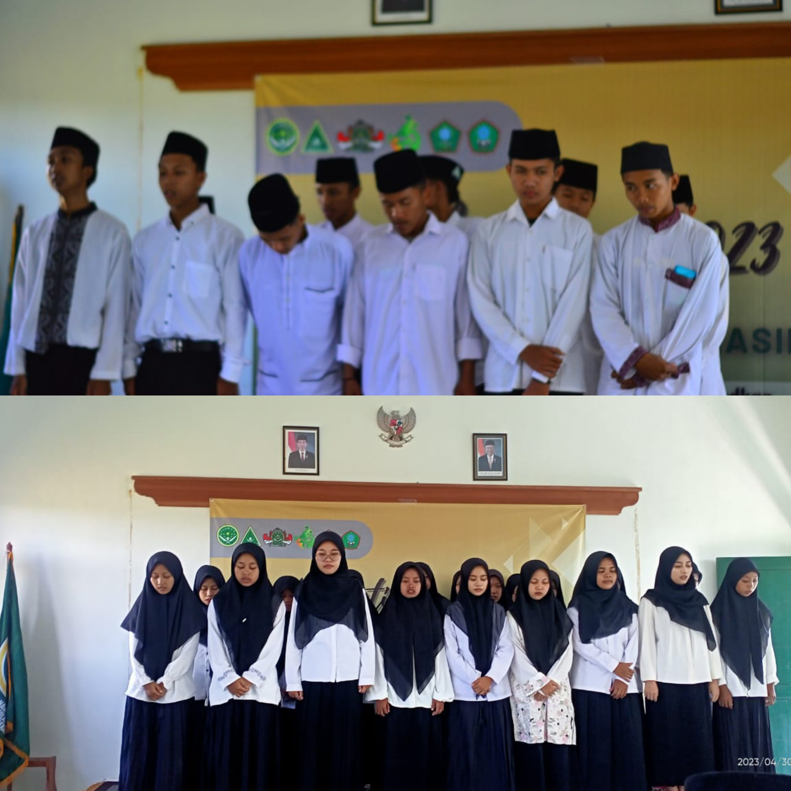
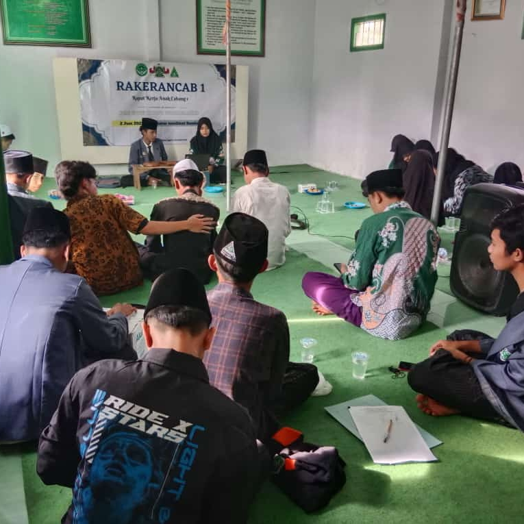
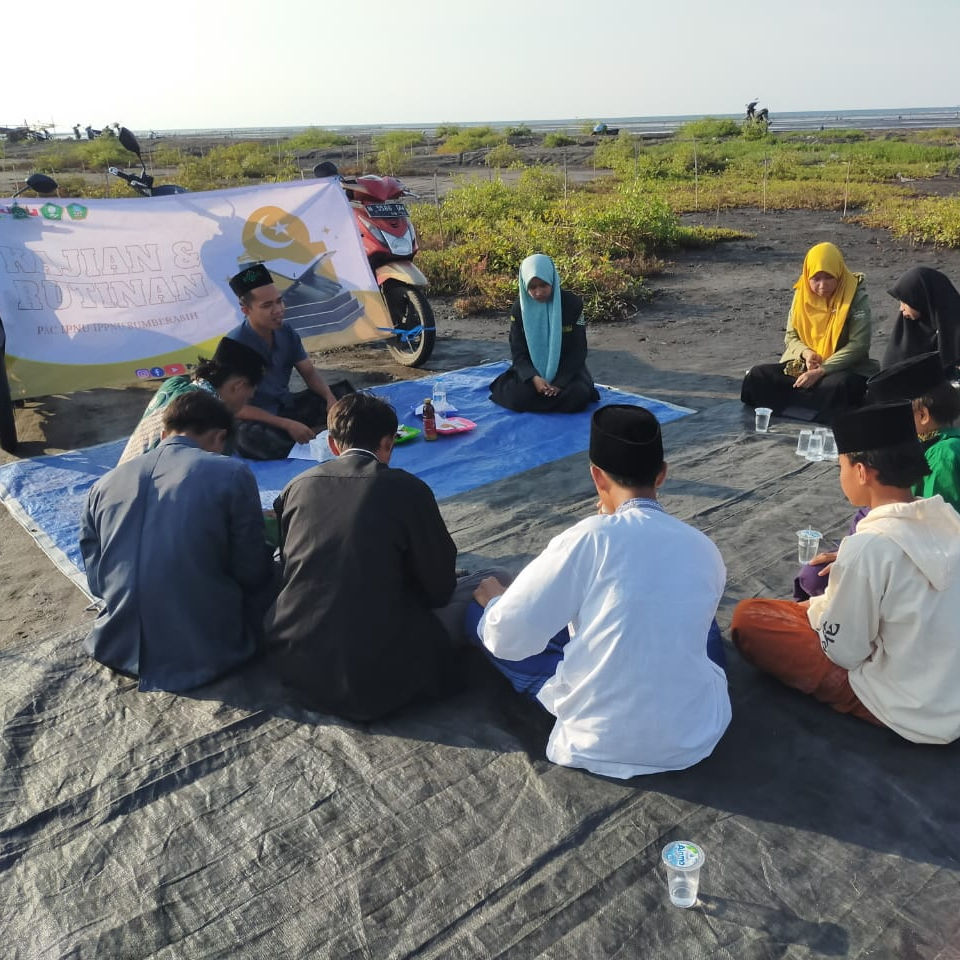
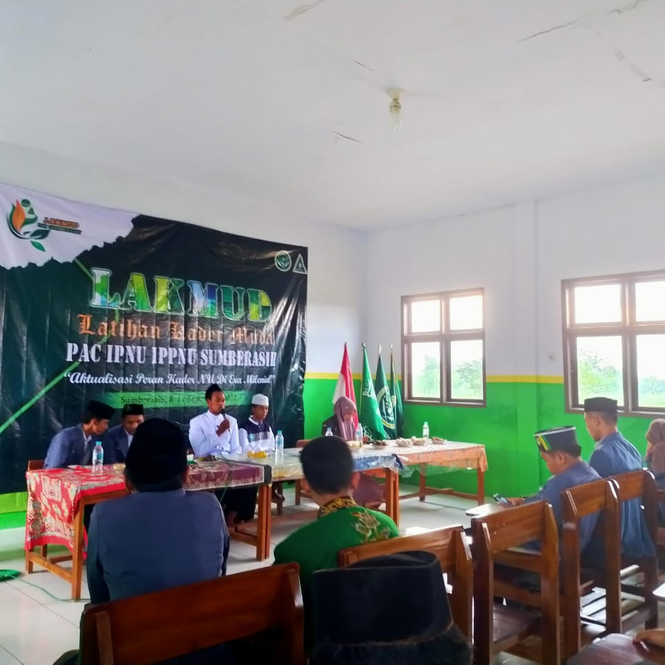

KONFERENSI
Konferancab (Konferensi Anak Cabang) Ikatan Pelajar Nahdlatul Ulama (IPNU) dan Ikatan Pelajar Putri Nahdlatul Ulama (IPPNU) merupakan permusyawaratan tertinggi di tingkat anak cabang atau yang berada di kecamatan yang mana hal ini dilakukan jika kepengurusan di tingkat tersebut sudah habis masa baktinya.
 Minggu, 15 Januari 2023, Konferensi Pimpinan Anak Cabang IPNU IPPNU kecamatan sumberasih yang bertempat di Yayasan Miftahul Jannah. Kegiatan ini bertujuan untuk meneruskan estafet kepemimpinan IPNU IPPNU Sumberasih.
PEMBENTUKAN PK
Pimpinan komisariat yang disingkat (PK) disekolah se-Kecamatan Sumberasih adalah sebagai wadah siswa dan siwi dalam dalam mengembangkan tradisi amaliyah ke NUan dan ke ASWAJAan ala NAHDLATUL ULAMA`.
Sabtu, 4 Februari 2023, PAC IPNU IPPNU Sumberasih membentuk PK di SMA Darul Akhlaq Ponpes Darul Akhlaq Asyafi’iyah. Kegiatan ini bertujuan sebagai wadah kaderisasi siswa dan siswi SMA Darul Akhlaq untuk mempersiapkan kader-kader penerus NU dan pemimpin bangsa dan juga sebagai wadah komunikasi bagi siswa dan siswi SMA Darul Akhlaq untuk memperkokoh ukhwah nahdliyah, islamiyah, insaniyah, dan wathoniyah.
MAKESTA
Masa Kesetiaan Anggota yang disingkat MAKESTA adalah pelatihan kaderisasi untuk calon anggota Ikatan Pelajar Nahdlatul Ulama (IPNU) dan Ikatan Pelajar Putri Nahdlatul Ulama (IPPNU). MAKESTA merupakan gerbang awal yang harus diikuti oleh seluruh calon anggota IPNU dan IPPNU sebelum dinyatakan sah menjadi anggota.
Jum’at-Minggu, 3-5 Maret 2023, PAC IPNU IPPNU Sumberasih mengadakan kegiatan MAKESTA di Mi Islamiyah.
Kegiatan MAKESTA ini bertujuan untuk menguatkan komitmen anggota sebelum dinyatakan sah menjadi bagian dari organisasi.
PELANTIKAN
Pelantikan bertujuan untuk meresmikan pengurus dan anggota baru yang sebelumnya telah dipilih melalui konferensi anak cabang.
Minggu, 30 April 202, PAC IPNU IPPNU Sumberasih mengadakan pelantikan di Ma Nurul Ulum.
RAKER
Rapat Kerja atau disingkat RAKER yaitu untuk menentukan proker (Program Kerja) selama periode 2023-2025
Jum’at, 2 Juni 2023, PAC IPNU IPPNU Sumberasih mengadakan RAKER di kantor muslimat PAC Sumberasih.
KAJIAN & RUTINAN
Kajian dan Rutinan PAC IPNU IPPNU Sumberasih dilaksanakan setiap 2 minggu sekali untuk mempererat silaturahmi dan meningkatkan pengetahuan pemahaman dan merefleksi kembali materi yang telah diberikan pada saat pengkaderan.
Jumat,16 juni 2023, PAC IPNU IPPNU Sumberasih mengadakan kegiatan Kajian dan Rutinan di Pantai harapan.
LAKMUD
Latihan Kader Muda (LAKMUD) merupakan jenjang kedua dalam kaderisasi formal di Ikatan Pelajar Nahdlatul Ulama (IPNU) Ikatan Pelajar Putri Nahdlatul Ulama (IPPNU).
Selasa-Jum’at, 6-9 september 2022, PAC IPNU IPPNU Sumberasih mengadakan kegiatan LAKMUD di SMA Assubhan Pondok Pesantren Bani Rancang. Kegiatan ini bertujuan untuk menciptakan kader IPNU IPPNU yang memiliki watak, motivasi pengembangan diri, rasa memiliki organisasi dan keterampilan berorganisasi serta upaya pembentukan standar kader yang mandiri.